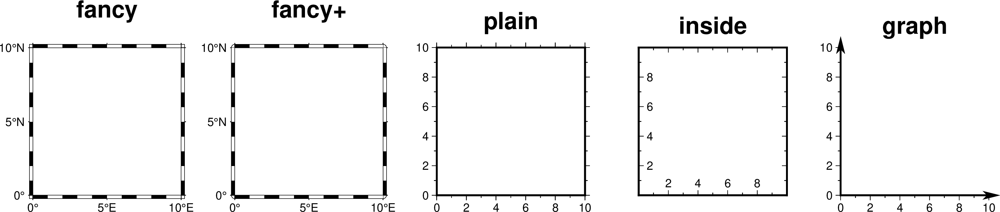

MAP参数
边框相关参数
- MAP_FRAME_TYPE
底图边框类型 [fancy]
可选值包括 inside|plain|graph|fancy|fancy+。
通常，地理投影默认使用 fancy 边框类型，而笛卡尔投影则默认使用 plain 边框类型。但某些地理投影比较特殊，只能使用 plain 边框类型。
fancy+ 相对于 fancy 的区别在于，边框的拐角为圆角
下图给出了不同的底图边框类型的效果：
 对于 graph 类型，默认箭头的顶端超过坐标轴顶点7.5%。可以通过使用 graph,length[%] 的方式指定超过的长度或百分比。坐标轴的宽度由 MAP_FRAME_WIDTH 决定，箭头的长度和宽度则分别是该宽度的10倍和5倍。箭头的形状还可以由 MAP_VECTOR_SHAPE 控制。
- MAP_FRAME_PEN
底图类型为 plain 时边框的画笔属性 [thicker,black]
- MAP_FRAME_WIDTH
设置底图类型为 fancy 时的边框宽度 [5p]
注意：对于 fancy 底图类型，MAP_FRAME_PEN 自动设置为 MAP_FRAME_WIDTH 的0.1倍。
- MAP_FRAME_AXES
使用 -B 选项时默认要绘制/标注的轴 [WSENZ]
默认值 WSENZ 表示2D底图下绘制并标注四条边，3D底图下则绘制四条边和一条Z轴。加上 + 则3D底图下会绘制完整的长方体边框。
注解
不建议设置该参数。建议使用 -B 选项控制实际绘制的边，详情见 -B 选项。
标注相关参数
- MAP_ANNOT_OFFSET
同时设置 MAP_ANNOT_OFFSET_PRIMARY 和 MAP_ANNOT_OFFSET_SECONDARY 的值
- MAP_ANNOT_OFFSET_PRIMARY
一级标注的开始位置与刻度尾端间的距离 [5p]
- MAP_ANNOT_OFFSET_SECONDARY
二级标注的顶部与一级标注的底部之间的距离 [5p]
- MAP_DEGREE_SYMBOL
在地图上绘制“度”时所使用的符号 [degree]
可以取 ring|degree|colon|none。下图给出了取不同值时的绘图效果：
- MAP_ANNOT_ORTHO
控制笛卡尔投影下哪些轴的标注垂直于轴 [we]
该参数可以将 wesnz 做任意组合，以设置每个轴的标注是否垂直于轴。该参数的效果可以被 -B 选项的 +a 子选项所覆盖。
下图给出了取不同值时的绘图效果：
注解
此参数仅对笛卡尔投影有效。对于地理投影，可使用 MAP_ANNOT_OBLIQUE。
- MAP_ANNOT_OBLIQUE
控制倾斜地理投影下标注和刻度的显示 [anywhere]
该参数可以取如下几个关键词的任何组合，关键词之间以逗号分隔：
separate 表示经度仅标注在上边界和下边界，纬度仅标注在左边界和右边界
anywhere 表示在任何一个假想的网格线穿过地图边界时均标注
lon_horizontal 表示将经度标注水平绘制
lat_horizontal 表示将纬度标注水平绘制
tick_extend 倾斜的刻度线会扩展使得其长度等于指定刻度线长度
tick_normal 忽略网格线与边框的夹角，刻度线总是垂直于底图边框
lat_parallel 纬度标注平行于底图边框
- MAP_ANNOT_MIN_ANGLE
对于某些倾斜投影方式而言，如果标注的基线与地图边界间的夹角小于该值，则不绘制标注。合理的取值范围为0到90 [20]
- MAP_ANNOT_MIN_SPACING
在某些倾斜投影中，相邻两个标注之间的最小距离，若标注的距离小于该值，则不绘制 [0p]
标签相关参数
- MAP_LABEL_OFFSET
轴标注底部与轴标签顶部间的距离 [8p]
刻度相关参数
- MAP_TICK_PEN
同时设置 MAP_TICK_PEN_PRIMARY 和 MAP_TICK_PEN_SECONDARY 的值
- MAP_TICK_PEN_PRIMARY
一级刻度的画笔属性 [thinner,black]
- MAP_TICK_PEN_SECONDARY
二级刻度的画笔属性 [thinner,black]
- MAP_TICK_LENGTH
- MAP_TICK_LENGTH_PRIMARY
一级刻度的主刻度和次刻度的长度 [5p/2.5p]
若只给定一个长度值，则次刻度的长度假定为主刻度的一半
- MAP_TICK_LENGTH_SECONDARY
二级刻度的主刻度和次刻度的长度 [15p/3.75p]
若只给定一个长度值，则次刻度的长度假定为主刻度的25%
网格线相关参数
- MAP_GRID_PEN
同时设置 MAP_GRID_PEN_PRIMARY 和 MAP_GRID_PEN_SECONDARY 的值
- MAP_GRID_PEN_PRIMARY
一级网格线的线条属性 [0.25p,black]
- MAP_GRID_PEN_SECONDARY
二级网格线的线条属性 [thinner,black]
- MAP_GRID_CROSS_SIZE
同时设置 MAP_GRID_CROSS_SIZE_PRIMARY 和 MAP_GRID_CROSS_SIZE_SECONDARY 的值
- MAP_GRID_CROSS_SIZE_PRIMARY
一级网格十字线的大小 [0p]
0表示绘制连续的网格线
非零值表示绘制对称的网格十字线
负值表示非对称网格十字线，即只绘制远离赤道和本初子午线的刻度
- MAP_GRID_CROSS_SIZE_SECONDARY
二级网格十字线的大小 [0p]
0表示绘制连续的网格线
非零值表示绘制对称的网格十字线
负值表示非对称网格十字线，即只绘制远离赤道和本初子午线的刻度
- MAP_POLAR_CAP
控制某些投影下两极附近网格线的显示 [85/90]
在某些投影下，由于极点是单个点，常规的网格线绘制方法会导致极点处网格线非常密且不美观。该选项则用于解决这一问题。
若取值为 none，则表示不对极点附近的网格线做特殊处理。否则可以指定 pc_lat/pc_dlon，表示在 -pc_lat 到 +pc_lat 纬度范围内正常绘制网格线；在大于 +pc_lat 和小于 -pc_lat 纬度区域内，则按照 pc_dlon 指定的经线间隔绘制网格线。GMT会在 ±pc_lat 纬度处绘制一个圈圈以分隔这两个纬度区间。
下图展示了该参数取不同值时的绘图效果：
标题相关参数
其它参数
- MAP_DEFAULT_PEN
设置所有与 -W 选项相关的画笔属性的默认值 [0.25p,black]
在参数值的前面加上 + 可以覆盖其他 MAP_*_PEN 相关参数中的颜色。
- MAP_ORIGIN_X
新绘图在纸张上的原点的X坐标（仅适用于GMT经典模式）[72p]
- MAP_ORIGIN_Y
新绘图在纸张上的原点的Y坐标（仅适用于GMT经典模式）[72p]
- MAP_LOGO
是否在左下角绘制GMT时间戳 [false]
可以取 true|false，等效于在命令行中使用 -U 选项。
注解
该参数存在已知BUG，见 https://github.com/GenericMappingTools/gmt/issues/3902
- MAP_LOGO_POS
GMT时间戳相对于当前绘图原点的对齐方式与位置 [BL/-54p/-54p]
- MAP_SCALE_HEIGHT
地图比例尺的高度 [5p]
- MAP_LINE_STEP
绘制线段时所使用的最大步长 [0.75p]
地理投影下，两点之间会用大圆路径连接，因而GMT需要先计算大圆路径上的其他中间点的坐标，并将这些点用直线连起来。若该步长太大，会导致大圆路径看上去很不光滑；若太小，则会导致数据点太密，图片太大。
- MAP_VECTOR_SHAPE
矢量箭头的形状 [0]
可以取-2到2之间的任意实数。下面展示了取-2、-1、0、1和2时的矢量箭头的形状：